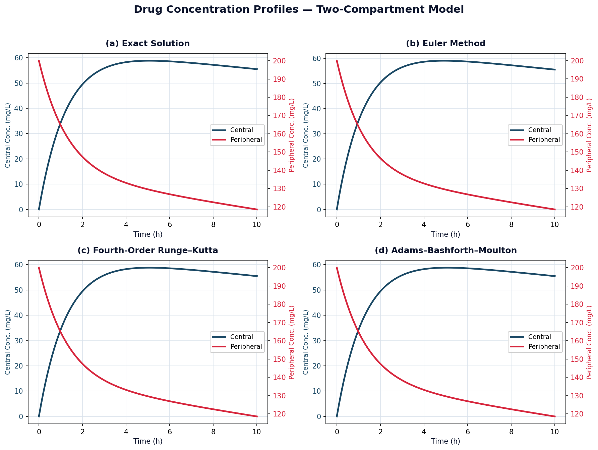
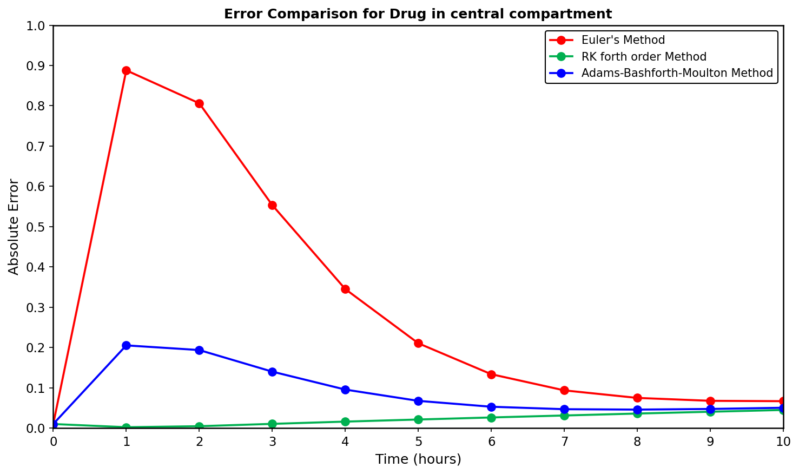
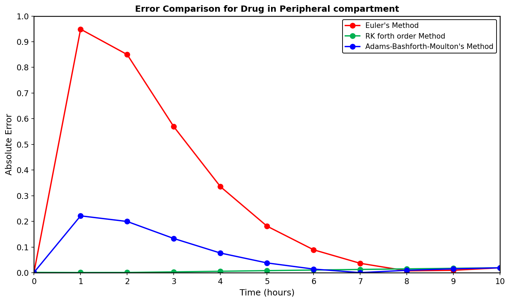
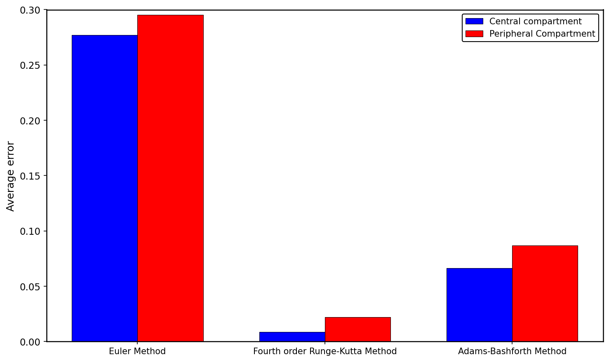

We recreated every figure from the study in MATLAB, put all three methods side by side, and explain what the graphs are telling us.
We rebuilt the model ourselves from the ground up and recreated the main figure from the paper. Each panel shows the blood level (navy) and tissue level (crimson) across ten hours, drawn for the exact answer and for each of the three methods. Our results match the published ones right down to four decimal places.

The blood starts with no drug in it. The level shoots up as the drug moves in from the tissues, peaks at around the five-hour mark, then drops off as the body clears it. The tissues start fully loaded at 200 mg/L and fall away steadily. The tissue change is gentler than the blood change because tissues take up and release the drug more slowly.
When we plot the size of each method's error against time, the ranking jumps straight out. Euler has the biggest error, and it is worst in the early part where the levels are changing fast. Adams–Bashforth–Moulton sits in the middle. Runge–Kutta stays so close to the exact answer that its error is barely visible the whole way through.



| Method | Central | Peripheral | Overall avg | Overall (%) |
|---|---|---|---|---|
| Euler | 0.2771 | 0.2953 | 0.2862 | 28.62% |
| Runge–Kutta 4 | 0.0086 | 0.0221 | 0.0154 | 1.54% |
| Adams–Bashforth–Moulton | 0.0663 | 0.0868 | 0.0766 | 7.66% |
Figures taken from Fatima et al. (2025), Table 5. Our own version of the model gives the same ranking and matches their Table 1 blood values to four decimal places.
Right after the dose, the blood started with no drug in it. It then rose quickly as the drug moved in and got passed around, and finally eased back down as the body cleared it. That rise-then-fall shape is the classic sign of a two-compartment system at work.
The tissues started fully loaded at 200 mg/L and dropped away steadily as the drug moved back into the blood and left the body. This fall was gentler than the sharp early swings seen in the blood.
All three methods became more accurate as time went on. Once the levels settled and stopped changing so fast, every method closed in on the exact answer.